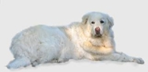

<table border="0" class="layout">
    <colgroup span="1"><col width="25%" span="1"></col><col width="75%" span="1"></col></colgroup> 
    <tbody>
        <tr>
            <td valign="top">
                <div class="holster">
                    <div class="block_container s3 b-text b-static-text user_css_128160066548" id="e_127779730356">
                        <p><em><strong>Малкина Алла Константиновна</strong></em></p>
                        <p>тел.423-63-77</p>
                        <p><strong>Заходите к нам в <a href="http://www.berniadmiral.narod.ru/">гости</a><br /></strong></p>
                    </div>
                    <div class="block_container s3 b-image txt-center" id="e_1282729437170"><span></span></div>
                </div>
            </td>
            <td>
                <div class="holster">
                    <div class="block_container s3 b-text b-static-text user_css_12816005438" id="e_128272938349">
                        <p style="text-align: center;"><span style="color: #0000ff;"><strong><span style="color: #0000ff;">Маремма</span></strong></span></p>
                        <p style="text-align: justify;"><span style="color: #0000ff;"><strong><span style="color: #0000ff;">Из истории породы: </span></strong><span style="color: #006600;"><span style="color: #0000ff;">известная в Великобритании под названием "маремма", эта итальянская овчарка на родине носит двойное имя. Дело в том, что в Италии две области спорили за право называться ее родиной: низинная область, протянувшаяся к югу от Чечины вдоль берега моря, и горная область Абруццких Апеннин. В 60-х годах, после съезда во Флоренции, профессор Джузеппе Соларо разработал существующий ныне стандарт породы, которая ко всеобщему удовольствию была названа двойным именем - мареммоабруццкой овчаркой. Считают, что маремма могла быть потомком белой рабочей собаки венгров, а крестьяне Тосканы продолжали разводить ее в исключительной чистоте. Первые дошедшие до нас сведения о собаке, которая могла быть предком мареммы, относятся примерно к 1 веку нашей эры: в 65 году Колумбелла упоминает о белой собаке, а Марк Варрон (116-27 год до нашей эры) описывает стати овчарки, в точности совпадающие с современным стандартом мареммоабруццкой овчарки.</span> </span></span></p>
                        <p style="text-align: justify;"><span style="color: #006600;"><span style="color: #0000ff;"><strong>Общая характеристика: </strong>это величественная, благородная, выносливая, бесстрашная, умная, подвижная собака. Не агрессивна. Надёжный защитник и друг семьи.</span></span></p>
                        <p style="text-align: justify;"><span style="color: #006600;"><span style="color: #0000ff;"><strong>Содержание и уход:</strong> в период формирования ей необходимо много двигаться, но после возмужания надобность в больших физических нагрузках отпадает. Поскольку за века собаки этой породы привыкли к широким открытым пространствам, чтобы жить в доме, им нужен хотя бы сад. Необходимо регулярно расчесывать, лучше всего проволочной щеткой. Это на редкость чистоплотная собака, которая тщательно ухаживает за собственной шерстью. Во время расчесывания надо внимательно осматривать уши - нет ли каких-либо признаков воспаления.</span></span><span style="color: #006600;"><br /><span style="color: #0000ff;"><strong>Размеры:</strong> рост 65-73 см (кобели), 60-68 см (суки).</span></span></p>
                        <p style="text-align: justify;"><span style="color: #006600;"><span style="color: #0000ff;">__________________________________________</span></span></p>
                        <p style="text-align: justify;"> </p>
                    </div>
                </div>
            </td>
        </tr>
    </tbody>
</table>​
